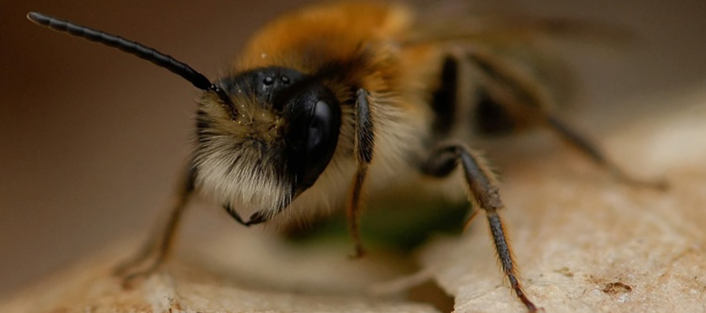

Les abeilles sauvages
L'abeille sauvage au mode de vie généralement solitaire, ne fabrique pas de miel récolté par l’homme. Les plus petites ne dépassent pas 4 mm (les halictes), la plus grande atteint 2,5 cm (l’abeille charpentière). C'est elle, l'abeille la plus pollinisatrice de toutes.